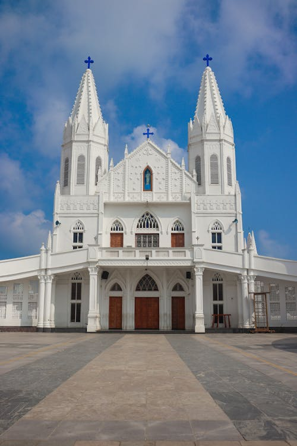
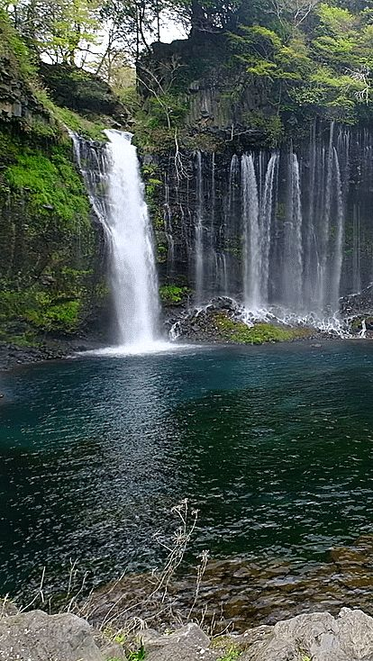
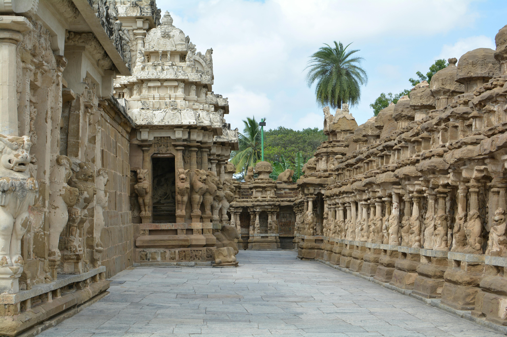
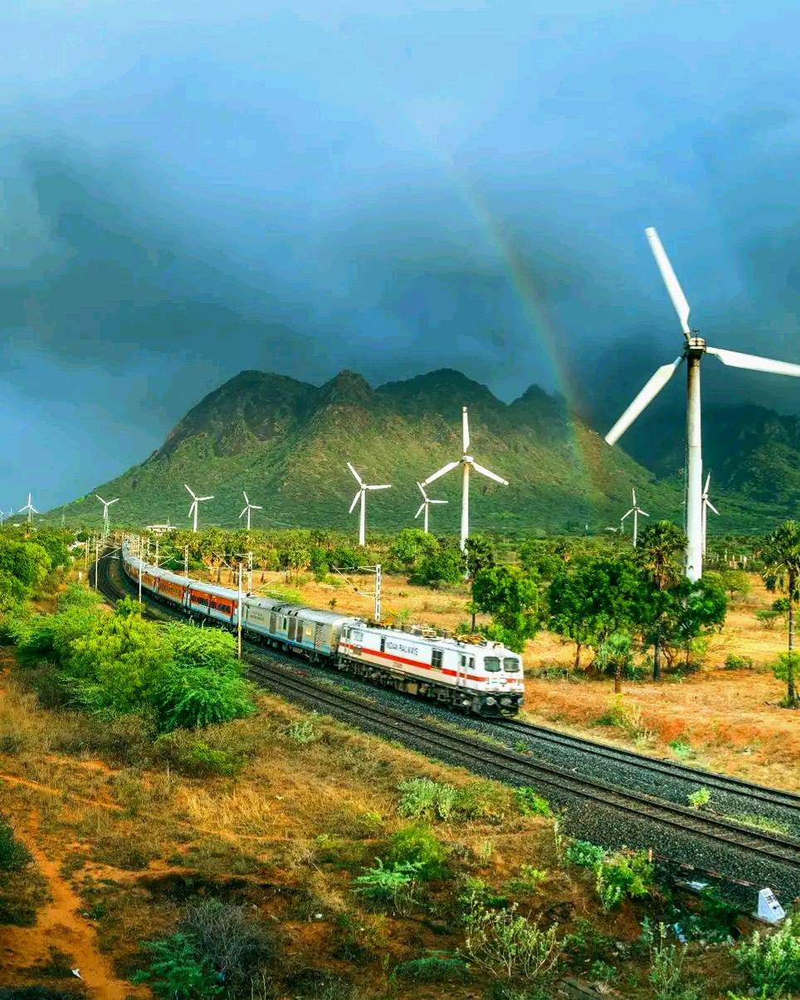
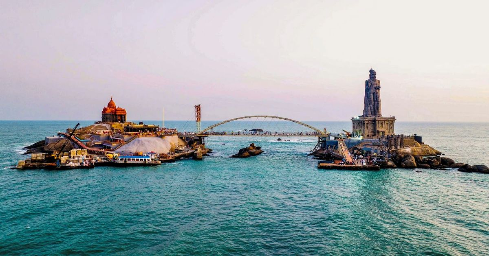

Beautiful Views Of Kanyakumari
Tourist places in Kanyakumari are popular for their natural beauty, historical monuments, temples, and ocean views that attract visitors from all over the world.





